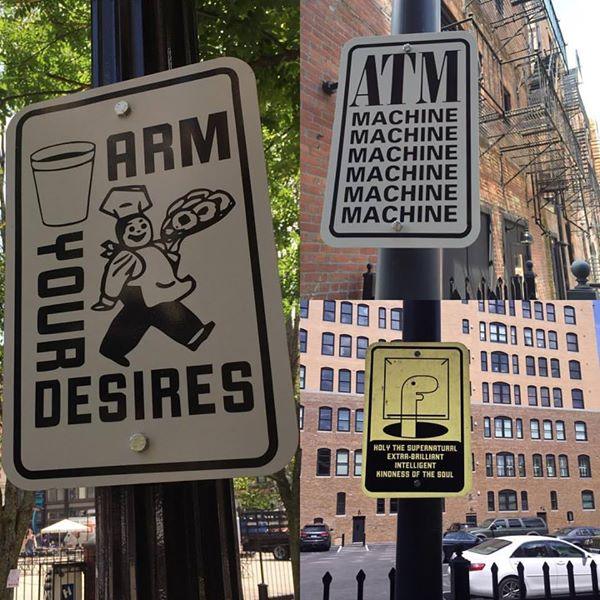

Street sign blanks can be found for about $12. I've always said that the Fab Lab isn't a sign shop, but it is basically just a sign shop.
During the 2015 Fab Academy session we had some recitations with featured guests. Olafur Eliason hosted a couple of recitations and assigned some homework where we were to explore smiles as a graphic element. I added the classic "have a good day" smile to Big Friend and mounted it on a street sign to document the reactions.